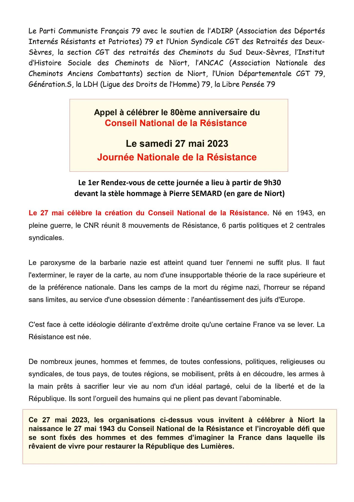
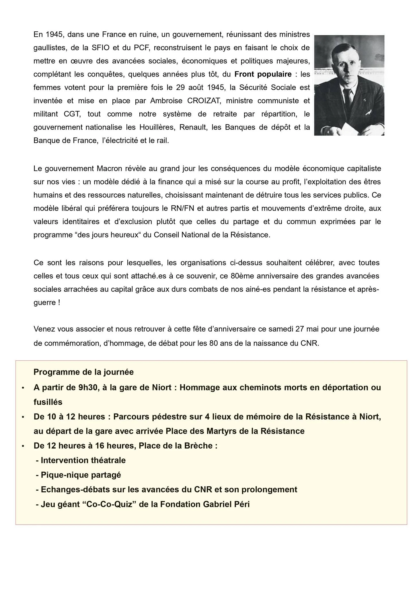

Appel de la fédération
80 ans du Conseil national de la Résistance. L’appel du 27 mai à Niort
Date indiquée par Facebook · 24 mai 2023
Repères éditoriaux
Nous avons appelé à célébrer la création du CNR, avec le soutien de l’ADIRP 79 et de l’Union syndicale CGT des retraités. Le compte rendu du 1er juin prolonge cet appel.
Texte conservé avec la publication
Samedi 27 mai 2023, journée nationale de la Résistance.
Appel à célébrer le 80ème anniversaire du Conseil National de la Résistance créé le 27 mai 1943.
Le Parti Communiste Français 79 avec le soutien de l’ADIRP (Association des Déportés Internés Résistants et Patriotes) 79 et l’Union Syndicale CGT des Retraités des Deux-Sèvres, la section CGT des retraités des Cheminots du Sud Deux-Sèvres, l’Institut d’Histoire Sociale des Cheminots de Niort, l’ANCAC (Association Nationale des Cheminots Anciens Combattants) section de Niort, l’Union Départementale CGT 79, Génération.S, la LDH (Ligue des Droits de l’Homme) 79, la Libre Pensée 79,
vous invitent à célébrer à Niort la création du Conseil National de la Résistance.
1er Rendez-vous pour cette journée à partir de 9h30 devant la stèle hommage à Pierre SEMARD (en gare de Niort) puis de 10h à 12h, parcours pédestre sur 4 lieux de mémoire de la Résistance à Niort, avec arrivée place des Martyrs de la Résistance.


Sources
Archive rouge · export Facebook · AR-0002-FB-01644
À lire aussi · À Niort, nous faisons vivre la mémoire du Conseil national de la Résistance